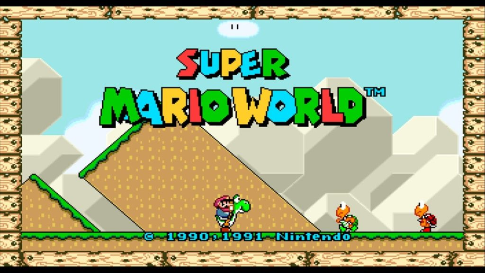
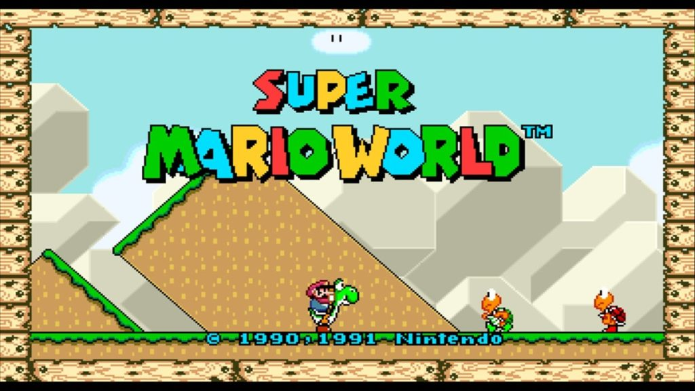

Escute a musica tema do jogo:


Super Mario World (スーパーマリオワールド Sūpā Mario Wārudo?), originalmente chamado no Japão de Super Mario Bros. 4 (スーパーマリオブラザーズ4 Sūpā Mario Burazāzu fō?),[7] é um jogo eletrônico de plataforma, desenvolvido pela Nintendo Entertainment Analysis & Development e publicado pela Nintendo, em 1990, para o console Super Nintendo Entertainment System (SNES). A história segue a jornada de Mario para salvar a Princesa Toadstool e a Dinosaur Land do antagonista Bowser e de seus capangas, os Koopalings. A jogabilidade é semelhante à dos jogos anteriores da série Super Mario: os jogadores controlam Mario ou seu irmão Luigi através de uma série de fases, cujo objetivo é alcançar um portão gigante em seu final. Super Mario World introduz Yoshi, um dinossauro que pode comer inimigos, bem como ganhar habilidades comendo cascas de Koopa Troopas.
Fotos do game
 
